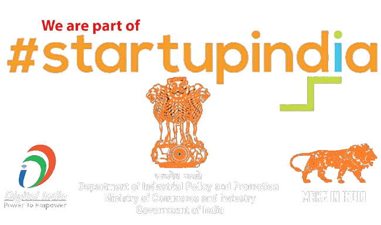
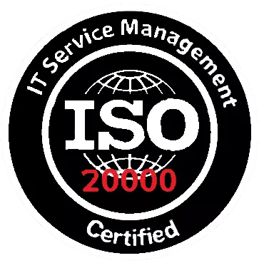

Our Company Certified
| Recognised by
UDYAM-JH-06-0010892

Recognised as Startup by DIPP |Cert. No. DIPP87680
An ISO 9001:2015

An ISO 27001:2013
An ISO 20000-1:2018

data breach and data selling is a common incident for many MNC's where information is stolen or taken from a system without the knowledge or authorization of the system's owner. Mostly, a small company or large organization may suffer a data breach but we promise you that we'll 100% secure your data and information.
We hard work and practice in a small partitioned-off area of a room; We work and living in small place but our mind and cability of thinking is beyond of earth. We've a next-generation ideas for valuable clients.
We've an enthusiasm for technology,especially computers and high technology. We've a strong feelings for technology; Our view for technology's interaction with society as creating a utopia, cyber or otherwise, and a strong indescribable futuristic feelings. Our goals is societal developments, improvements to daily life, or as forces that will transform reality for the better.
information security policy (ISP) is a set of rules that forcefully guide us an individualy to work securely with IT /assets. Client's products and data is first priority to secure, So our company created an information security policy(ISP) and regular follow to ensure the clients that their /assets is completely secure. We follow security protocols and procedures and also an updated and current security policy ensures that sensitive information can only be accessed by authorized users.
Check our Services

We serve a services for both Govt. & Private Tenders|Projects.We securely develop a products as per the client requirement within the client's budget.

Defending of computers, servers, mobile devices, electronic systems, networks, and data from malicious attacks by bad guys or hackers.

Security information and event management(SIEM) is mantaining the company data security or any issues of products and services combine security information management and security event management.SIEM team track the real-time data transfering & recieving; they provide real-time analysis of security alerts by using different level tools and applications.Security operations center(SOC) is a centralized unit that deals with security issues on an organizational and technical level; SOC team maintaing and deals with various level of risk,managing 3 sectors like peoples, process and technologies of oraganizations security issues.

DevOps is the process and set of practices that combines software development and IT operations.DevOps engineer do the process,using of different tools & methodologies to balance needs throughout the SDLC(software development life cycle)by coding and deployment; to maintain and updates the products, they have various skills,talent and goals to develop the IT industries reputation and maintain with same flow.

the process of running an application on a server or device. Deployment in software and web development means pushing changes or updates from one deployment environment to another;the generation of knowledge and processes to develop systems to solve problems and extend human capabilities. The application of new technologies, particularly computers and software applications, has been a major factor driving productivity growth in recent decades;Network Deployment for Social Benefits in Developing Countries;acquiring and installing the technology to make it available for use.

Development is the process to make or develop a software for computer or other devices for realtime uses and to do esily any work.IT developers manage upgrades of systems and software, negotiate with product vendors, and ensure the security of a company's IT infrastructure.In IT industry various types of development work do in daily basis like; Mobile Developer. Mobile Developers will develop software for mobile phones, this includes building apps for iOS and Android and other app store platforms,Software Developer,Web Developer,Front-End Developer,Back-End Developer,Full-Stack Developer,Data Scientist,DevOps Developer etc.

Compliance Audit: Internal audit rules, local law and regulations, policies, decisions, and procedures.
Compliance Audits: HIPAA, ISO27001, PCI DSS, GDPR, FISMA, FERPA, HITRUST, SOC 1 2

Forensics helps in the civil and criminal justice system by providing a digital evidence in depth to the court.Forensics is very helpful in real and our new digital world.

An examination of the management controls within an Information technology infrastructure and business applications;mainly 3 types of audits is important in IS&Branch Audit: external audits, internal audits, and Internal Revenue Service (IRS) audits. the process of collecting and examining the management of controls over an organization’s information systems, practices, controls and operations.ystems & Applications: Focusing on the systems and applications within an organization. Information Processing Facilities: Focusing that IT processes are working correctly, timely and accurately, whether in normal or disruptive conditions.Systems Development: Evaluate if those systems which are under development are in compliance with the organization’s standards. Management of IT and Enterprise Architecture and assuring that IT management is structured and processes in a controlled and efficient manner.

An information technology consultant is a third-party service provider who is qualified to advise clients on the best use of IT to meet specific business requirements by providing support of new technology implementation; giving IT training to the exisitng employees and users;providing assistance with technical issues.Services to be provided-IT Advisory,IT Solution Implementation,IT Modernization,Infrastructure Management,Cloud Consulting & Migration,Software Startup Consulting,Cybersecurity Consulting,Big Data Solution for IoT Pet Trackers.

Software as a service (Saas);Platform as a service (PaaS);Infrastructure as a service (IaaS);Anything as a service (XaaS). A wide range of services delivered on demand to companies and customers over the internet.File storage and backup, web-based email and project management tools. Examples of SaaS cloud service providers include Dropbox, G Suite, Microsoft Office 365, Slack and Citrix Content Collaboration;data backup, disaster recovery, email, virtual desktops, software development and testing, big data analytics, and customer-facing web applications.

Create Backups for Your Systems;Update Site Security;Add More Server Capabilitie;Educate Your Team On Safer IT Practices;Implementations of Cloud Computing into your business infrastructure;immediate mitigation;allowing real-time reporting of a structure's condition;reduce the cost of network infrastructure.

4 types of network integrations is available in IT industries-Standalone,Network connected,Network integrated,Dedicated network integrated; implementation and verify the configuartion of netwotk nodes that's systems work together as intended. |System integration needs to improve productivity and quality of their operations;to speed up information flows and reduces operational costs for various companies;System integration is very important for an organizations for different IT systems to "talk to each other" throughly the system integration.3 types of system integration is there-Enterprise Application Integration (EAI),Data Integration (DI),Electronic Document Integration|Interchange (EDI)

Technical Solution an implementation encompass products, product components, and product-related lifecycle processes either singly or in combination as appropriate; processes,design, software development; diplomatic problem solving, to maintain efficient and effective IT systems;IT Consultancy. Cloud Computing,Relocation Services

Customer relationship management (CRM) is a process in which a business or other organization administers its interactions with customers, typically using data analysis to study large amounts of information.CRM systems can benefit organizations ranging from small businesses to large corporations.CRM can store more data collection of and access to customer data can help businesses identify trends and insights about their customers through reporting and visualization features.Search engines such as Google and Bing use bots to crawl pages on the web, going from site to site, collecting information about those pages and putting them in an index.

IT Advisory will advice you, how to use, where to use, how to implement, where to implement; the old or new technology is best.IT Advisory and IT consultancy company is to support and nurture the company from the very beginning of the project until the end, and deliver the project not only in the scope, time and cost but also with complete customer satisfaction.Inshort:In management, information technology consulting (also called IT consulting, computer consultancy, business and technology services, computing consultancy, technology consulting, and IT advisory) is a field of activity which focuses on advising organizations on how best to use information technology (IT) in achieving their business objectives.

IaaS and PaaS, SaaS products are frequently marketed to both B2B and B2C user; SaaS is one of three main categories of cloud computing, alongside infrastructure as a service (IaaS) and platform as a service (PaaS).Software as a service (SaaS) is a software distribution model in which a cloud provider hosts applications and makes them available to end users over the internet.